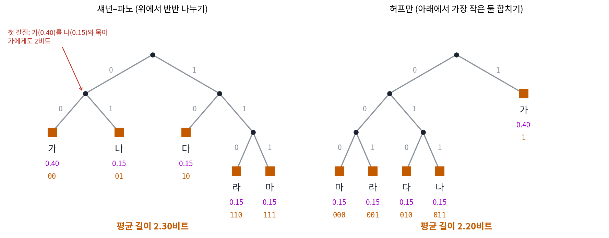
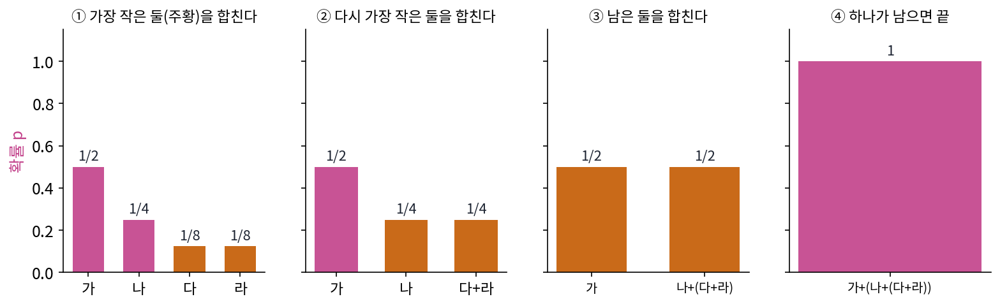
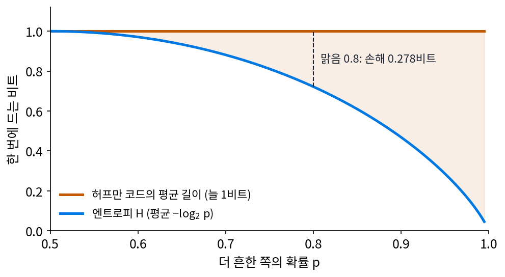
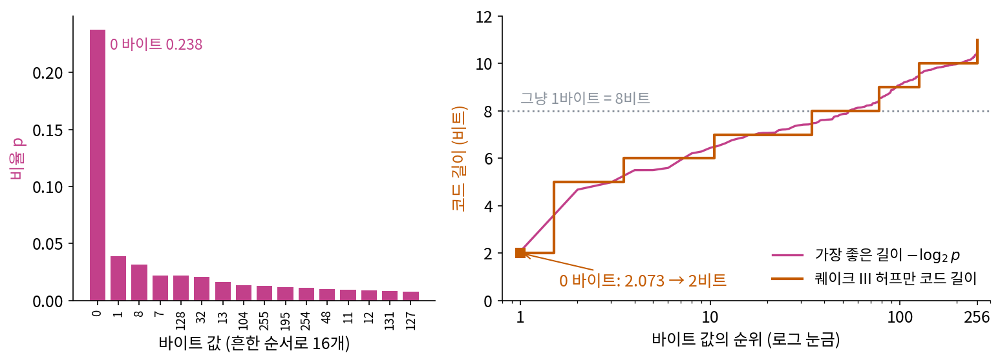
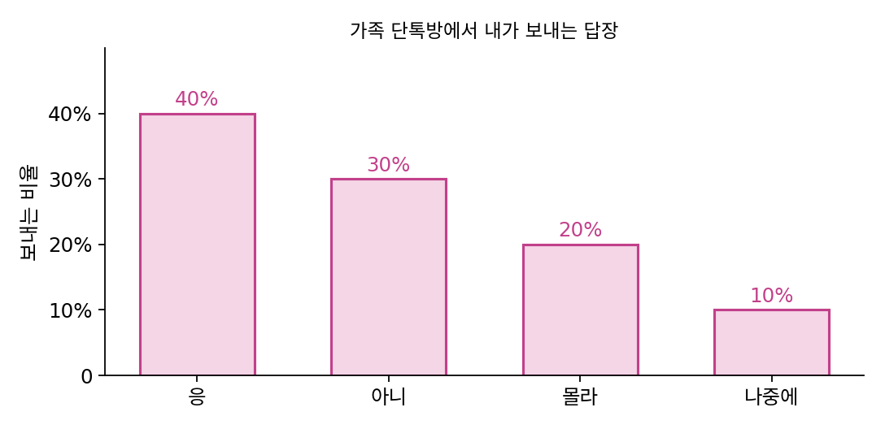
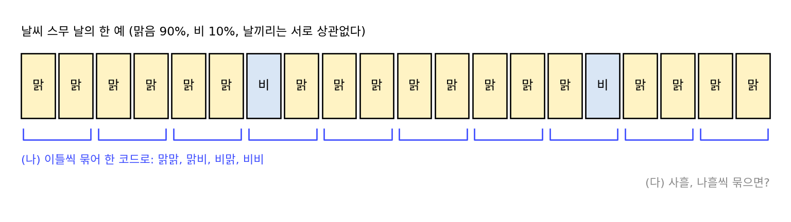
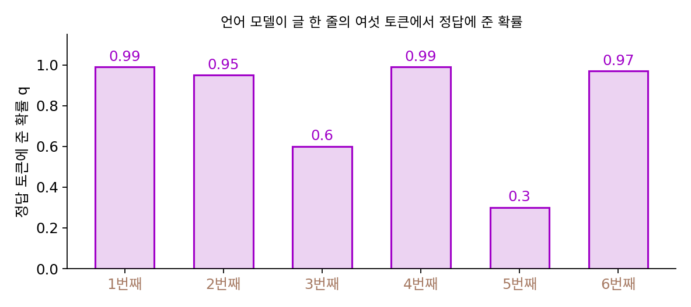

허프만 코드: 가장 좋은 길이 −log₂ p 를 정수로 맞추기
크래프트 부등식은 코드 길이에 예산이 있다는 것을 알려 준다. 한 말의 코드가 ℓ비트이면 [0, 1)에서 길이 2^(−ℓ)의 구간을 가져가고, 그 길이를 모두 더하면 1을 넘을 수 없다. 그러면 남는 물음은 그 예산을 어떻게 나누느냐인데, 흔한 말에 짧은 코드를 주어야 한다는 것까지는 누구나 짐작한다. 그런데 날씨를 하루 한 번씩 보내는데 맑은 날이 열흘에 여덟 날이라면, 「맑음」에 줄 코드의 길이는 몇 비트가 가장 좋을까? 한 비트보다 짧은 코드는 없는데, 맑은 날을 1비트로 보내는 것이 정말 최선일까?
역사: 기말시험 대신 낸 보고서
1951년 MIT에서 정보 이론을 가르치던 파노(Robert Fano)는 학생들에게 기말시험을 보거나, 가장 효율적인 코드를 만드는 법에 대한 보고서를 내라고 했다고 전해진다. 파노 자신이 내놓았던 방법(오늘날 섀넌–파노 코드라 부른다)은 위에서부터 나누는 것이었다. 말들을 확률의 합이 반반에 가깝게 두 묶음으로 나눠 한 묶음에 0, 다른 묶음에 1을 붙이고, 나뉜 묶음마다 다시 반반으로 나누기를 되풀이한다. 그럴듯하지만 반반으로 나누는 첫 칼질이 어긋나면 뒤에서 바로잡을 길이 없어, 늘 가장 짧은 평균을 주지는 못했다.
대학원생 허프만(David A. Huffman)은 보고서를 쓰다 거의 포기할 즈음, 반대로 아래에서부터 쌓는 방법을 떠올렸다고 전해진다. 그는 이 방법을 1952년 『Proceedings of the IRE』에 「최소 중복 코드를 만드는 방법(A Method for the Construction of Minimum-Redundancy Codes)」으로 냈다. 수업의 과제가 아직 아무도 풀지 못한 문제였다는 것을 허프만이 몰랐다는 이야기도 함께 전해지지만, 1차 기록으로 확인한 것은 논문뿐이다.


위에서 반씩 나누나 아래서 합치나 비슷해 보이는데요. 교수님이 그걸 놓쳤다는 게 신기해요.

반반으로 나누는 방법이 오히려 자연스러워요. 스무고개처럼 질문 하나로 후보를 반씩 줄이는 거니까요. 그런데 그렇게 만든 코드가 가장 짧은지 확인할 방법이 있었을까요?

음, 가능한 코드표를 전부 만들어 평균을 비교하면 되지 않나요? 말이 넷이면 몇 개 안 될 것 같은데요.

넷이면 손으로도 돼요. 그런데 말이 늘면 나무 모양이 금세 많아지고, 1951년의 학생은 그걸 손으로 해야 했어요. 다 해 봐도 그 확률에서만 가장 짧다는 걸 알 뿐이고요.

아, 확률이 바뀌면 처음부터 다시 다 해 봐야 하네요. 어떤 확률이 와도 가장 짧다는 걸 보이는 방법이 있어야 했던 거구나.

아래서부터 쌓으면 왜 첫 칼질을 잘못하는 일이 안 생겨요? 가장 드문 두 말이 맨 아래에 간다는 건 어떤 코드표에서든 확실한 건가요?
가장 작은 둘을 합치기
허프만의 생각은 이렇다. 가장 드문 두 말은 가장 긴 코드를 받을 것이고, 가장 좋은 코드표에서는 가장 드문 두 말이 마지막 한 자리만 다른 형제로 놓일 수 있다. 그렇다면 그 두 말을 확률을 더한 한 덩어리로 보고, 말이 하나 줄어든 같은 문제를 풀면 된다. 덩어리를 합칠 때마다 그 안의 말들에 한 자리씩 붙는다.
정보기하학의 약어 사전 예에서 네 말은 가 1/2, 나 1/4, 다 1/8, 라 1/8의 비율로 나왔다. 가장 작은 다와 라를 합치면 1/4, 다시 가장 작은 나와 그 덩어리를 합치면 1/2, 마지막으로 가와 합치면 1이다. 다와 라는 세 번 합쳐졌으니 3비트, 나는 두 번이니 2비트, 가는 한 번이니 1비트다.

이렇게 확률이 가장 작은 둘을 합치기를 되풀이해 만든 프리픽스 코드를 허프만 코드 (아래서부터 합쳐 만든 가장 짧은 코드, Huffman code)라 한다. 정수 길이의 프리픽스 코드 가운데 평균 길이가 가장 짧다는 것이 허프만이 보인 정리다. 약어 사전의 코드표 0, 10, 110, 111은 우연히 고른 것이 아니라 허프만 코드였다.
이 예에서는 길이 1, 2, 3, 3이 마침 −log₂(1/2), −log₂(1/4), −log₂(1/8)과 같다. 확률 p로 나오는 말에 길이 −log₂ p를 주면 평균 길이가 엔트로피가 되고, 이보다 짧은 평균은 어떤 코드로도 낼 수 없다. 정보기하학 「엔트로피: 평균 놀라움」이 「평균 놀라움」으로 세운 엔트로피를 코드의 말로 읽으면, 평균 코드 길이가 내려갈 수 있는 가장 낮은 값이다. 이 엔트로피는 동역학에서 본 「경우의 수의 로그」로서의 엔트로피와 같은 양이어서, 경우가 W개로 고르면 둘 다 log₂ W다.
문제는 −log₂ p가 대개 정수가 아니라는 데 있다. 맑음 0.8, 비 0.2라면 가장 좋은 길이는 −log₂ 0.8 = 0.322비트와 −log₂ 0.2 = 2.322비트다. 0.322비트짜리 코드는 없으니, 말이 둘뿐이면 허프만 코드도 「맑음 0, 비 1」로 하루에 1비트를 쓴다. 엔트로피는 0.722비트이므로 하루에 0.278비트를 버리고, 더 흔한 날씨의 확률이 1에 가까울수록 버리는 비트는 하루 1비트에 가까워진다. 허프만 코드의 평균이 엔트로피보다 1비트 넘게 길지는 않다는 위의 부등식은, 거꾸로 말하면 1비트 가까이까지는 버릴 수 있다는 뜻이다.

비율을 잘못 믿고 코드표를 만들면 어떻게 되는지는 정보기하학에서 이미 보았다. 실제 비율이 p인데 q를 믿고 길이 −log₂ q를 주면 평균 길이는 크로스 엔트로피 Σ p(−log₂ q)가 되고, 엔트로피보다 KL 발산만큼 길다. 이 장은 그 이야기를 다시 하지 않고, 믿음 q를 이미 정했을 때 그 길이를 실제 비트열로 어떻게 내느냐에 집중한다.
게임 네트워크의 허프만 표: 0 바이트에 2비트
온라인 게임의 서버와 플레이어 컴퓨터는 1초에도 수십 번 짧은 메시지를 주고받는다. 그 메시지를 바이트 단위로 늘어놓으면 256가지 바이트 값이 고르게 나올까? 1999년에 나온 슈팅 게임 퀘이크 III 아레나(Quake III Arena)의 소스 코드(2005년 GPL로 공개)에는 바이트 값 0~255가 각각 몇 번 나왔는지를 적은 표가 박혀 있다. 주석으로 막아 둔 함수 하나가 기록해 둔 네트워크 바이트 파일을 읽어 이 표를 찍어 내는 코드여서, 실제로 주고받은 바이트에서 센 표로 보인다. 표의 합은 1,053,340번이고 그 가운데 0 바이트가 250,315번, 비율로 0.2376이다. 둘째로 흔한 1 바이트는 0.0391, 가장 드문 247 바이트는 740번뿐이다. 작은 수를 여러 바이트에 나눠 담으면 윗자리 바이트가 0으로 채워지니, 0이 이렇게 흔한 것도 그럴 만하다.
게임은 이 표로 허프만 코드를 만들어 두고, 메시지의 바이트를 모두 그 코드로 적는다. 게임 중에는 코드표를 고치지 않으니 미리 정한 고정 코드표다. 퀘이크 III의 허프만 코드 부분을 따로 컴파일해 바이트마다 코드 길이를 재어 보면(sources/code-length/s6_q3_huffman.py), 0 바이트는 가장 좋은 길이 −log₂ 0.2376 = 2.073비트에 가까운 2비트를 받는다. 1 바이트는 4.676비트 대신 5비트, 가장 드문 바이트들은 10~11비트를 받아 그냥 적는 8비트보다 길다. 표의 비율대로 바이트가 나오면 바이트 하나에 평균 6.305비트가 들어 8비트의 78.8%이고, 엔트로피 6.282비트보다 0.023비트만 길다.

코드표를 미리 고정해 둔 탓에 생기는 약점도 숫자로 보인다. 압축되었거나 암호화된 파일처럼 256가지 바이트가 고르게 나오는 자료를 이 코드로 적으면 바이트 하나에 평균 9.016비트가 들어, 그냥 적는 8비트보다 오히려 길어진다. 표가 믿는 비율과 실제 비율이 어긋나면 그만큼 비트를 더 쓰는 것이다. 허프만 코드가 가장 짧다는 정리는 실제 비율이 코드를 만들 때 쓴 비율과 같을 때에만 성립한다.
ML에서: 신경망 가중치를 줄이는 마지막 단계
허프만 코드는 지금도 여러 압축기의 마지막 단계에 들어 있고, 신경망을 작게 만드는 데도 쓰였다. 한(Song Han)·마오(Huizi Mao)·댈리(William Dally)의 「Deep Compression」(ICLR 2016)은 학습한 신경망의 가중치를 세 단계로 줄였다. 작은 가중치를 잘라 내고, 남은 가중치를 몇 개의 대푯값으로 모은 뒤, 마지막에 대푯값의 번호와 남은 가중치의 자리를 허프만 코드로 적었다. 대푯값마다 쓰이는 횟수가 고르지 않으니, 자주 쓰이는 번호에 짧은 코드를 주면 평균 길이가 준다. 무엇이 자주 나오는지 미리 아는 만큼 비트를 아낀다는 이 장의 생각이 모델 자체를 저장하는 데 쓰인 예다.
문제 4. 단톡방 답장 넷
가족 단톡방에서 내가 보내는 답장은 「응」 40%, 「아니」 30%, 「몰라」 20%, 「나중에」 10%다. (가) 네 답에 2비트씩 주면 한 답에 평균 몇 비트인가? (나) 허프만 코드를 손으로 만들고 평균 길이를 구하라. (다) 엔트로피는 몇 비트이고, 허프만 코드는 엔트로피보다 얼마나 긴가?

(가)는 2비트요. (나)는 흔한 순서대로 1, 2, 3, 4비트를 주면… 아, 프리픽스 코드로 1, 2, 3, 3이요. 응 0, 아니 10, 몰라 110, 나중에 111.
순서대로 길이를 준 건 맞을지도 몰라요. 그런데 그게 허프만 코드인지는 합치는 순서로 확인해 봐야죠.
가장 작은 둘부터 합쳐 보자. 나중에 0.1과 몰라 0.2를 합치면 0.3.
그럼 남은 게 응 0.4, 아니 0.3, 덩어리 0.3이네. 0.3이 둘인데 다음엔 뭘 합쳐?
가장 작은 둘이니까 0.3 둘을 합쳐 0.6. 마지막에 응 0.4와 합쳐. 합쳐진 횟수를 세면 응은 한 번, 아니는 두 번, 몰라와 나중에는 세 번이니까 1, 2, 3, 3이야. 민준이 답이랑 같네.
평균은 0.4 × 1 + 0.3 × 2 + 0.2 × 3 + 0.1 × 3 = 1.9비트예요. 2비트씩보다 0.1비트 짧아요.
(다)는요? 가장 좋은 길이 −log₂ p는 정수가 아니었죠.
−log₂ 0.4 = 1.322, −log₂ 0.3 = 1.737, −log₂ 0.2 = 2.322, −log₂ 0.1 = 3.322이고, 평균 내면 엔트로피 1.846비트예요. 허프만 코드는 0.054비트 더 써요.

0.054비트는 어디서 새는 거야? 허프만이 제일 좋은 코드라며.

말마다 나란히 놓아 보면 보여. 「응」에 1.322비트를 주고 싶은데 1비트를 주고, 「아니」에는 1.737 대신 2비트를 줬어. 정수로 맞추느라 어떤 말은 득을 보고 어떤 말은 손해를 보는데, 평균하면 조금 손해야.
게임 네트워크의 바이트 표에서도 정수로 맞추느라 득과 손해가 갈렸죠. 0 바이트는 비율이 0.2376이라 가장 좋은 길이가 2.073비트인데 2비트를 받았고, 1 바이트는 4.676비트 대신 5비트를 받았어요.
0 바이트는 0.073비트 득을 보고 1 바이트는 0.324비트 손해네요. 그 표는 바이트 256가지의 득과 손해를 평균해서 엔트로피보다 0.023비트 길었고, 단톡방 답 넷은 0.054비트 길고요.

과제 점수를 10점 단위로만 줄 수 있으면 87점짜리는 90점, 82점짜리는 80점을 받는데, 평균은 원래와 조금 어긋나요. 허프만 코드가 1.322비트를 1비트로, 1.737비트를 2비트로 반올림한 것도 그런 거네요.
문제 5. 맑은 날을 묶어 보내기
맑은 날이 90%, 비 오는 날이 10%인 도시의 날씨를 날마다 보낸다(날끼리는 서로 상관없다고 하자). (가) 하루씩 허프만 코드로 보내면 하루에 몇 비트이고, 엔트로피는 하루에 몇 비트인가? (나) 이틀씩 묶어 네 가지(맑맑, 맑비, 비맑, 비비)에 허프만 코드를 주면 하루에 몇 비트인가? (다) 묶는 날을 늘리면 어떻게 되는가? 그 방법의 문제는 무엇인가?

(가)는 말이 둘이니까 맑음 0, 비 1로 하루 1비트요. 엔트로피는 −0.9 log₂ 0.9 − 0.1 log₂ 0.1 = 0.469비트예요. 두 배 넘게 쓰고 있네요.
맑은 날 하나에 0.152비트를 주고 싶은데, 한 날을 한 코드로 보내는 한 1비트 밑으로 갈 수가 없어요. 그럼 (나)는요?
일단 네 가지의 확률부터요. 맑맑 0.81, 맑비 0.09, 비맑 0.09, 비비 0.01이에요.
그럼 문제 4처럼 가장 작은 둘부터 합쳐 볼까요?
비비 0.01과 맑비 0.09를 합치면 0.10, 그다음 가장 작은 건 비맑 0.09와 그 0.10이라 합쳐 0.19, 마지막에 맑맑 0.81과 합쳐요. 길이는 맑맑 1, 비맑 2, 맑비 3, 비비 3이고요.
평균은 0.81 + 0.09 × 2 + 0.09 × 3 + 0.01 × 3 = 1.29비트. 이틀에 1.29니까 하루 0.645비트예요.

묶기만 했는데 1비트가 0.645비트가 됐어요. 그럼 사흘, 나흘씩 묶으면 더 줄겠네요?
계산해 봐요.
사흘씩이면 하루 0.533비트, 나흘씩이면 0.493비트요. 엔트로피 0.469에 다가가요.

그런데 나흘씩 묶으니까 코드표에 열여섯 줄이 있어야 해. 열흘씩 묶으면 2^10 = 1,024줄이고. 글자가 239가지인 한국어 글이라면 세 글자씩만 묶어도 239³ ≈ 1,365만 줄이야. 표가 너무 커져.

그래요. 정수 길이 때문에 버리는 비트는 묶음 하나에 1비트를 넘지 않으니, 여러 날을 묶을수록 하루에 버리는 비트가 줄어들어요. 대신 코드표가 가짓수의 거듭제곱으로 커지죠. 날마다 비 올 확률이 달라지는 경우까지 생각하면 표를 날마다 새로 만들어야 하고요.
택배를 하나씩 보내면 상자값이 매번 들고, 모아서 보내면 상자값은 주는데 모아 둘 창고가 필요하죠. 코드표가 그 창고고요.
문제 6. 언어 모델이 확신하는 토큰
언어 모델이 글 한 줄의 여섯 토큰에서 정답 토큰에 준 확률이 0.99, 0.95, 0.6, 0.99, 0.3, 0.97이었다. (가) 이 확률대로 적으면 토큰마다 몇 비트이고, 여섯 토큰에 모두 몇 비트인가? (나) 토큰마다 정수 길이의 코드(허프만 코드처럼)로 적으면 적어도 몇 비트가 드는가? (다) 쉬운 글일수록 둘의 차이는 어떻게 되는가?

−log₂ q를 차례로 계산하면 0.014, 0.074, 0.737, 0.014, 1.737, 0.044비트예요. 다 더하면 2.621비트, 토큰 하나에 0.437비트요.
토큰 하나를 코드 하나로 적으면요?
코드 하나는 적어도 1비트니까 여섯 토큰에 적어도 6비트예요. 2.621비트의 두 배가 넘어요.
0.99짜리 토큰 하나에 0.014비트면 되는데 1비트를 써야 하는 거네요. 70배 가까이요.
쉬운 글이면 어떻게 될까요?

모델이 맞히기 쉬운 글일수록 0.99 같은 토큰이 많아지니까, 정수 코드가 버리는 비트가 더 커져요. 예측을 잘할수록 정수 코드로는 그 이득을 다 못 거둬요.
맑은 날처럼 토큰 여럿을 묶어 보내면 되지 않을까요?
날씨는 날마다 0.9, 0.1로 똑같았는데… 토큰은 확률이 문맥 따라 바뀌잖아요. 그럼 묶음의 코드표를 미리 만들어 둘 수가 없어요.

그럼 토큰마다 코드를 따로 주지 말고 글 전체를 한꺼번에 하나로 적는 방법이 있어야겠네요.